Eight generated design targets, compared with the real application at 1568 × 1003. Select an image to inspect it at full size.
The application retains the real slide pixels, their true aspect ratio and native control states. Tissue drawings and some control states in the generated references differ. The comparison covers the layout, hierarchy, typography, panels, controls and actions.
Open working TMA-Grid · Validation record · Nielsen usability audit · Source provenance · Generation prompts
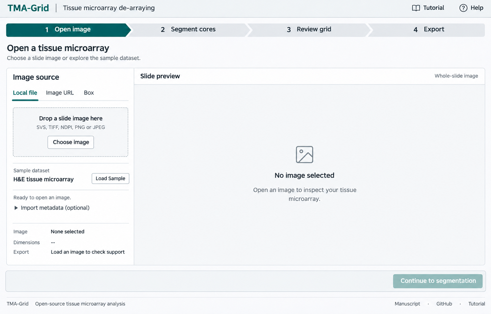
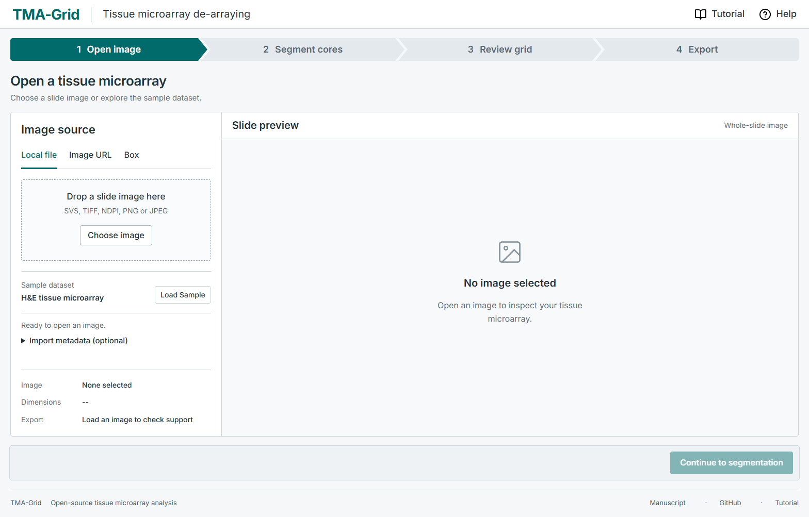
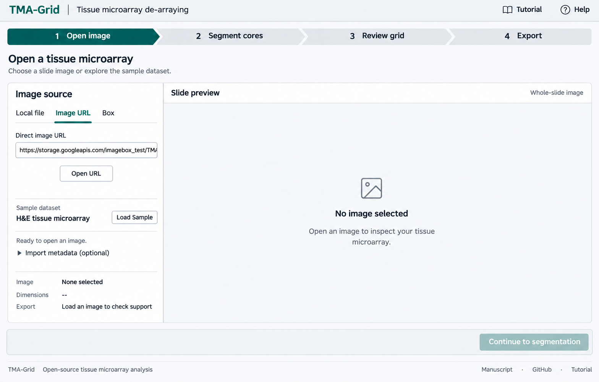
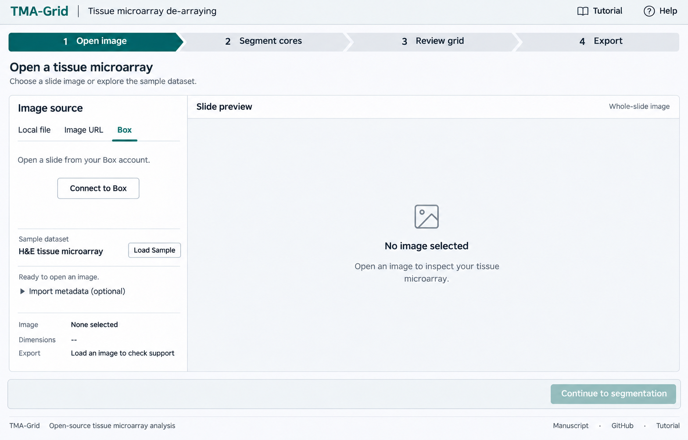
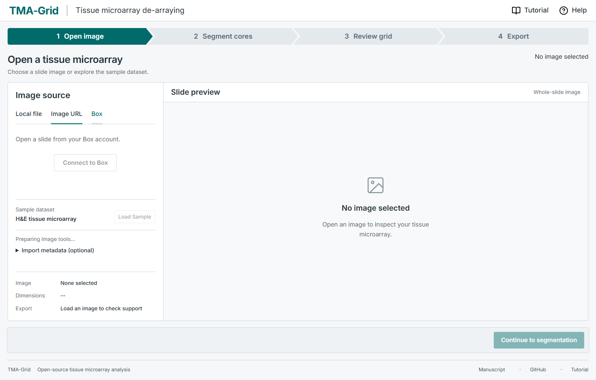
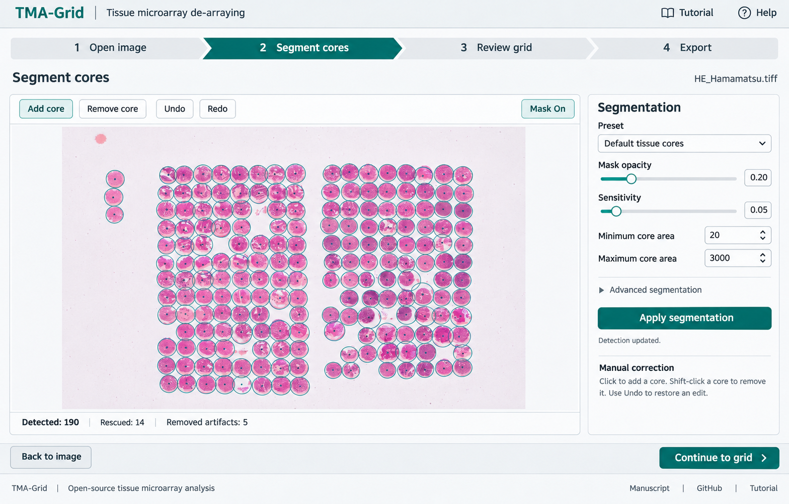
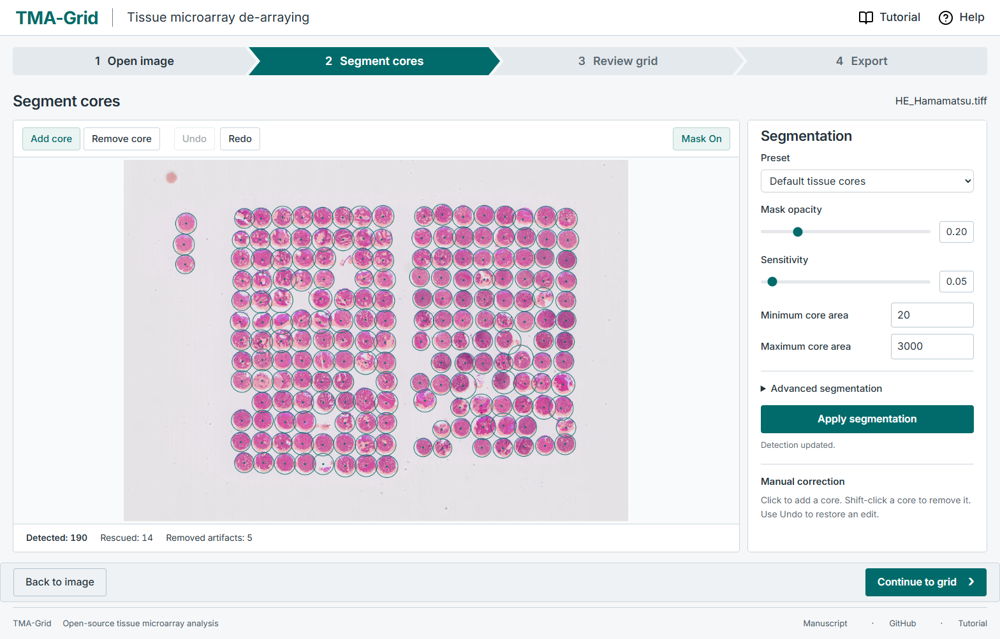
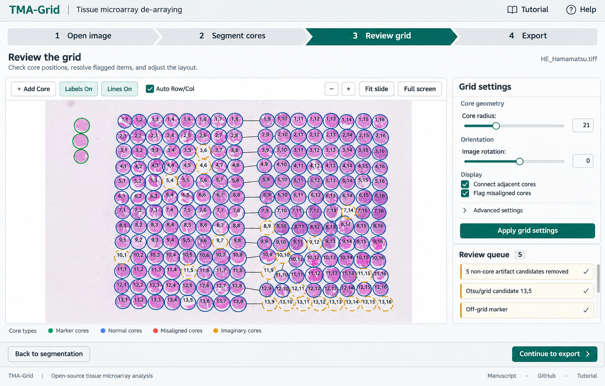
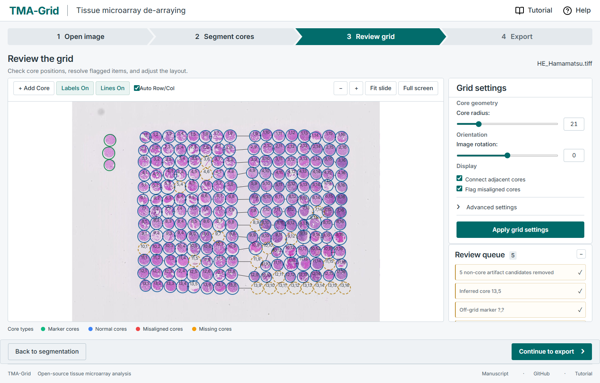
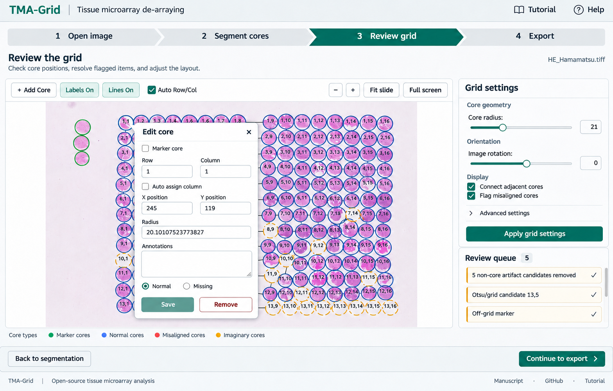
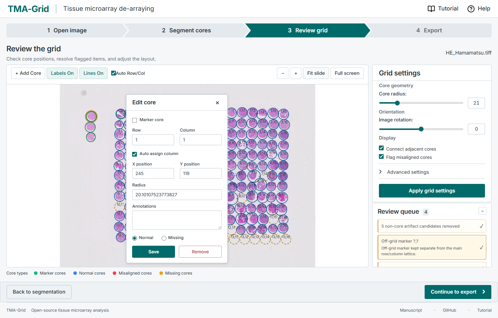
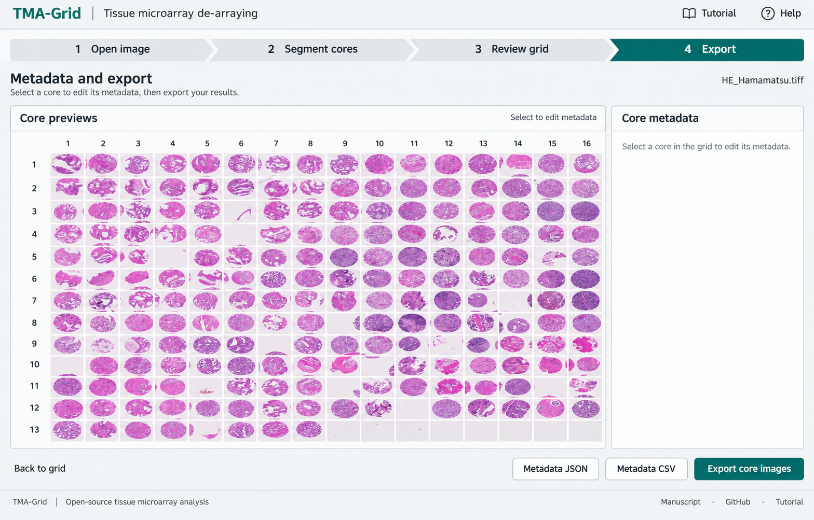
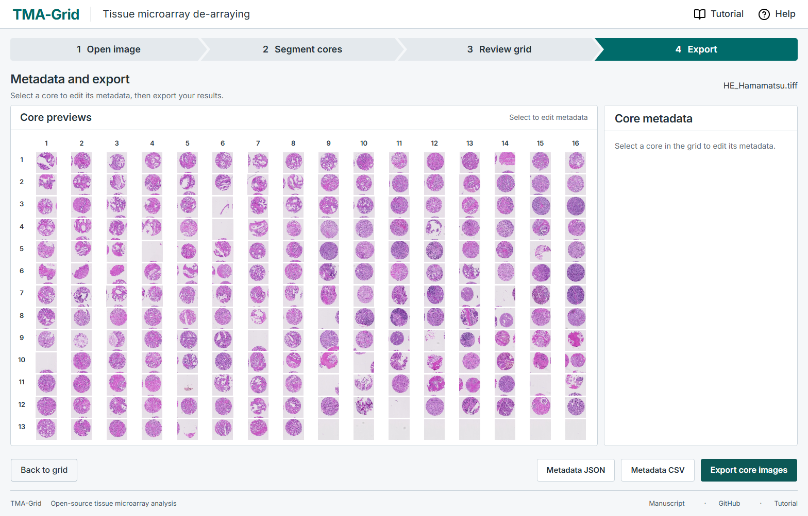
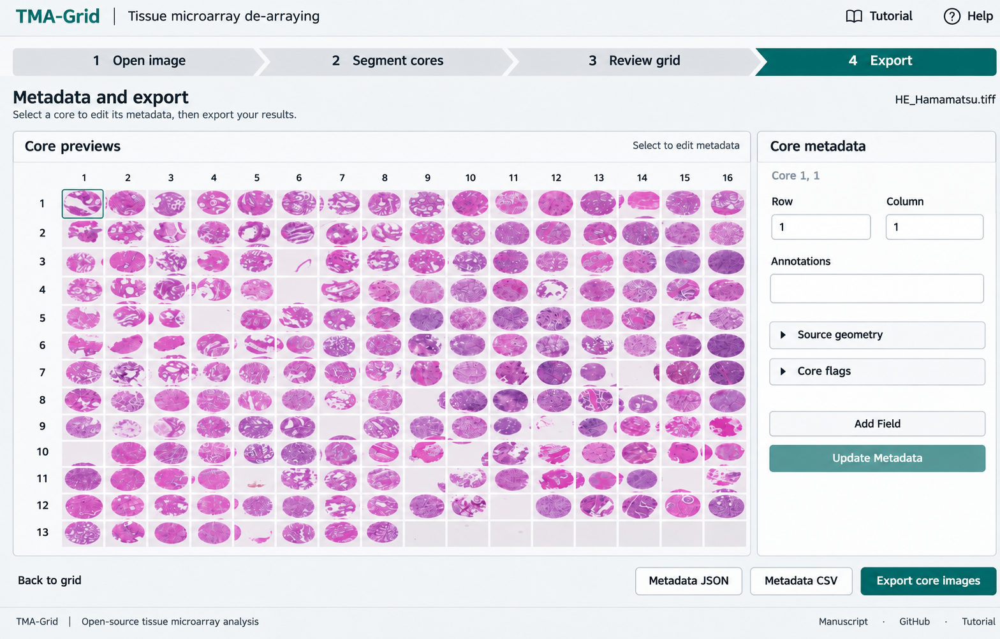
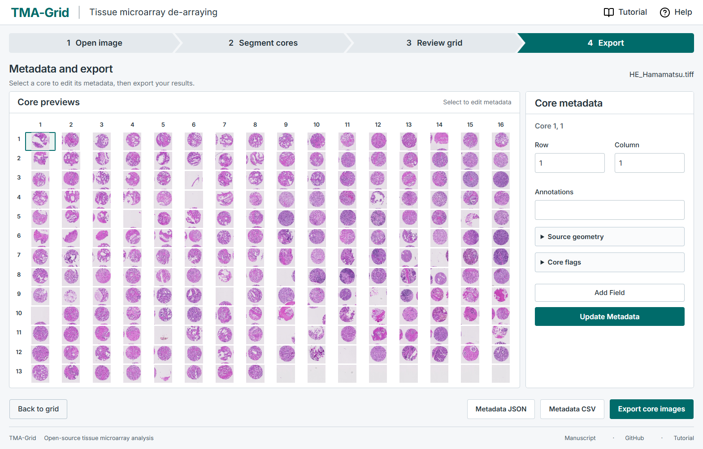